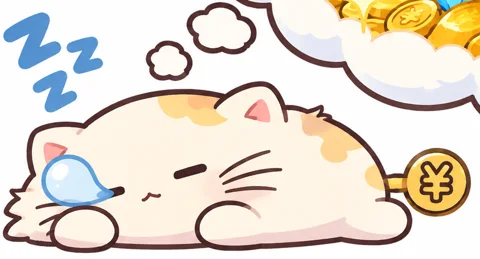
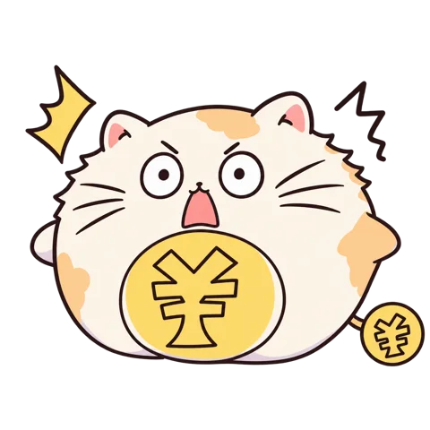
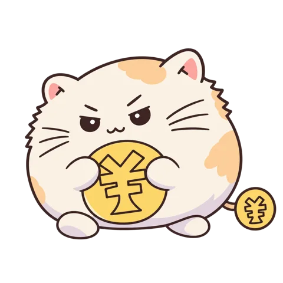
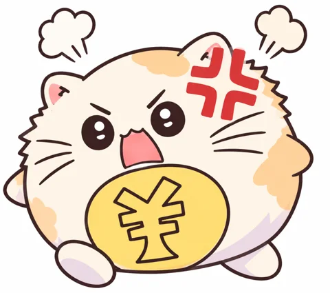
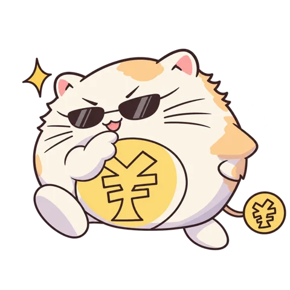

脱出ゲーム
ミニゲーム



遊ぶ前に
- 「遊ぶ」を押すとそのまま始まる。画面は自動で広がる。F11 や「全画面」ボタンで全画面になる。
- スマホは縦向きのままで遊べる（スマホ用の配置になる）。音は「はじめる」を押してから鳴る。
- 進み具合はこのブラウザに保存される。別の端末には引き継がれない。
- 小判の残高はゲームをまたいで持ち越す（ミニゲーム）。
- 動画を見る前に遊ぶと、初見の驚きがそのまま味わえる。

嘘をつかない猫、ゼニネコと遊ぶブラウザゲーム。
聞かれないことは、言わない。


